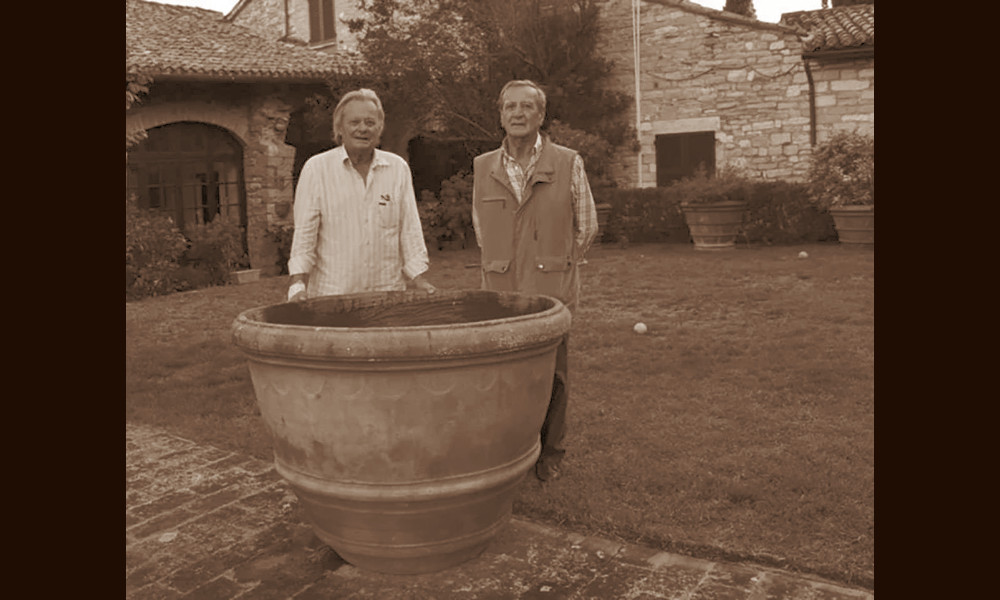

Riccardi
Assisi, entità attiva dal 1962 al 2017

- PERSONE
- Ennio Riccardi, antiquario
Piero Riccardi, antiquario - INSEGNA
- Riccardi Antichità
- IN CATALOGO
- Opere transitate, catalogo della Fondazione Zeri →
I fratelli Ennio e Piero fondarono l’impresa antiquaria “Riccardi Antichità” nel 1962 con sede in Piazza S. Chiara 3/B ad Assisi.
L’archivio professionale dell’impresa (1962-2017) contiene fotografie dei dipinti, sculture e arredi commercializzati e lettere ed expertise che restituiscono l’attività organizzativa per la Mostra Mercato assisiate e la fitta rete di rapporti con i migliori storici dell’arte del Secondo dopo guerra. È oggi custodito presso I Tatti, the Harvard University Center for Italian Renaissance Studies.
Nel 1973 Ennio e Piero Riccardi idearono uno degli appuntamenti antiquariali più prestigiosi a livello nazionale, la Mostra-Mercato di Antiquariato di Assisi, che per molte edizioni si svolse presso il Sacro Convento della Basilica di San Francesco. Proprio nel 1973, in occasione della prima Mostra, furono esposte cinquantasette tavole di scuola senese dal XIV al XV secolo, parte della straordinaria collezione che Frederick Mason Perkins aveva lasciato al Sacro Convento.
Forse in quella occasione si intensificarono i rapporti tra Federico Zeri – estensore del catalogo della collezione Perkins (1988) – e i Riccardi. I tre furono infatti legati da amicizia, oltre che da numerosi scambi professionali, come testimoniano le annotazioni dello studioso sui versi di un centinaio di fotografie di opere da loro commercializzate e due perizie su Nature morte redatte da Zeri nel 1998, poco prima di morire.
I Riccardi sono stati protagonisti del mercato dell’arte italiano del secondo Novecento e dell’inizio del XXI secolo.
Collaboratori
- Federico Zeri (storico dell'arte)
Eventi significativi nell'attività antiquariale
- 1973 - Prima edizione della Mostra-Mercato di Antiquariato di Assisi: I Riccardi di Assisi inaugurano la prima edizione della Mostra-Mercato di Assisi con l'esposizione dei dipinti senesi della collezione Mason Perkins donati al Sacro Convento